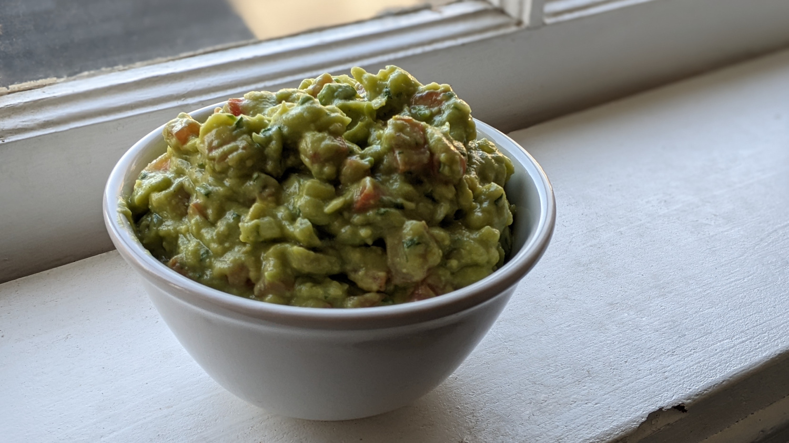

Guacamole

Author: Derek Nichols |
Cooked: March 26, 2022
Yields: 6 Servings | Prep Time: 10 Minutes | Cook Time: 5 Minutes
Ingredients
- 3 avocados
- 1 lime, juiced
- 1 tsp salt
- 1/2 c. diced red onion
- 3 Tbs chopped fresh cilantro
- 2 roma tomatoes, diced
- 1 tsp minced garlic
- 1 pinch cayenne pepper
Directions
- In a medium bowl, mash together the avocados, lime juice, and salt. Mix in onion, cilantro, tomatoes, and garlic. Stir in cayenne pepper.
- For best results, refrigerate 1 hour before serving.
Additional Notes
- White onion also works well.